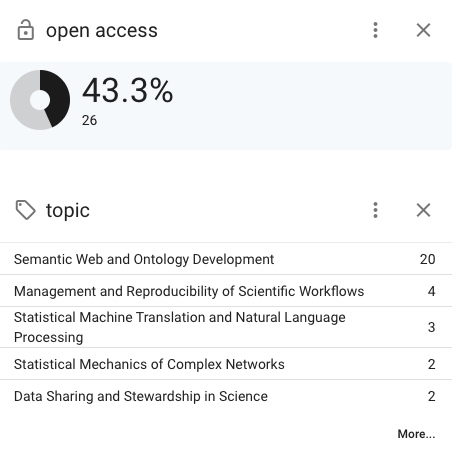
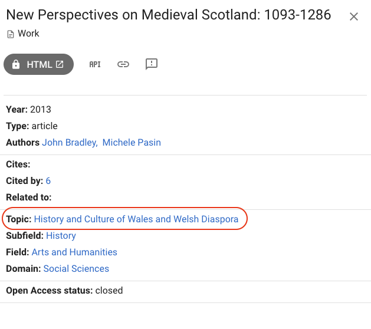
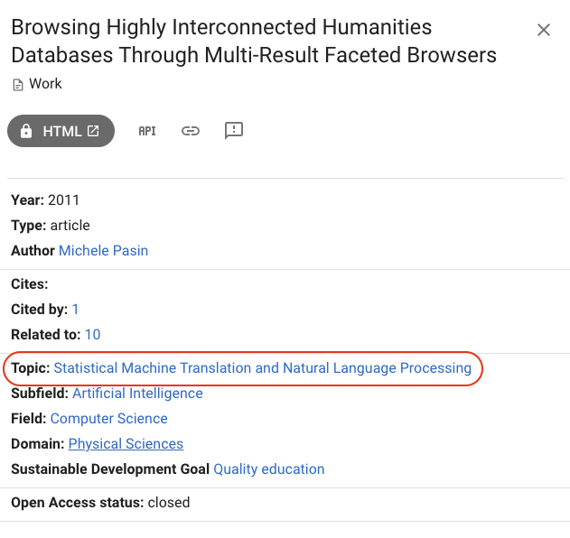

In this post I have taken a closer look at the classification of scientific disciplines in OpenAlex, a recently developed database of scientific works. The topics classification has been entirely generated computationally using a mix of citation clustering techniques and LLM-based labeling. The results, although not always so precise, are definitely worth exploring further.
Last week I went to the STI 2024 conference in Berlin, the annual European get together of experts in the area of research analytics and evaluation.
Lots of interesting talks but probably the thing that stroke me the most was the general excitement and sense of expectation about OpenAlex.
If you haven't encountered yet, OpenAlex is a 2022-released open database of research publications and other related content e.g. datasets, authors, journals etc.. developed by OurResearch.
Pretty much all of OpenAlex data and services and made available free of charge (with options to pay more for premium services) under a handy CC0 license.
One thing that caught my attention is the topics classification in OpenAlex. This is as hierarchical classification of scientific topics that consists of various thousand categories organized into a 5-levels hierarchy: keywords, topics, sub-fields, fields and domains.
The gist of this approach, according to the OpenAlex team:
Works in OpenAlex are tagged with Topics using an automated system that takes into account the available information about the work, including title, abstract, source (journal) name, and citations. There are around 4,500 Topics. Topics are grouped into subfields, which are grouped into fields, which are grouped into top-level domains. This is shown in the diagram below, along with the counts for each.
Our team put together a new implementation of keywords based on our Topics. There are currently over 26,000 keywords and we expect to add more as time goes on. [...] With our new topics system that was developed in coordination with CWTS, we came out with a list of 10 keywords for each topic. In order to assign keywords to works, we took the topics assigned to that work (at most 3 topics), pulled the keywords associated with those topics (at most 30 keywords, for now) and then determined the similarity of the keyword to the title/abstract using embeddings (and the BGE M3-Embedding model).
See the official data documentation for more, and in particular also worth looking into the paper OpenAlex: End-to-End Process for Topic Classification that describes the process that OpenAlex uses to assign topics to works. Note: this approach is itself taking advantage of publications clustering technology developed by Leiden CWTS group.
I downloaded the topics to have a closer look. This jupyter notebook pulls the topics dataset and turns it into a format that can be more easily visualized, eg by the FoamTree chart.
See below the end results (note: best to view it in full-screen on this page).
First impressions:
One thing worth of notice is that all topics have either a Wikipedia or a Wikidata page (or both), which makes it pretty handy for cross-database analytics projects.
I also had a go at transforming the classification into an ontology or more precisely an RDF (SKOS) model, so more compatible with knowledge graph technologies like wikidata and schema.org. If you are interested, the results are here openalex-topics-rdf.ttl and here a summary of generated ontology documentation for it.
Now, on to the less so good bits..
I took at look at the actual publications that get classified within these topics, but the results are a bit spotty. This is just a very preliminary analysis.. as I basically ran a few spot checks of papers I am familiar with, and found them in surprising 'places'.
For example, looking at my publications page on OpenAlex:

The main topic Semantic Web and Ontology Development is pretty spot on.
But it turns out that I have done work in two areas that I wasn't quite expecting: Management and Reproducibility of Scientific Workflows and Statistical mechanics of complex networks. I suppose it could be argued that my work is tangential to those areas?
Looking at other publications, the classification can be instead plainly wrong:

On the New Perspectives on Medieval Scotland publication, Scotland and Wales seem to have gotten mixed up. Or maybe is it because the citation network of Welsh historian is also correlated to Scottish history?
I wondered if these clusters might be more representative of groups of researchers / publications connected through an emerging topic, which may not be established or even known to them as a distinct area. Fascinating question..
Another example is this paper which is about HCI and databases, but instead is classified as NLP:

Without a doubt, an automatic classification of science topics is a hard problem to solve. So, despite the sometimes patchy assignment of topics to works, the fact the OpenAlex team did it all using citations-based clustering is still pretty impressive. I honestly hope there will be future iterations where we see this progressing further!
The enthusiasm around OpenAlex is justified, I believe. OpenAlex has has a pretty good API, good coverage of publications data (see this arXiv report) and a committed startup team developing it. All good ingredients that contribute to making the research community feel this may be a stepping stone towards a more open, free and reliable research data infrastructure.
I’m genuinely sympathetic towards initiatives like this. An ecosystem with open Research metadata makes science progress faster. I’ve had my fair share of experience with such projects while I was working on SN Scigraph.
Long term, no one knows whether this can be a sustainable enterprise. Data quality, funding, the need to keep innovating and for users' uptake are surely among the main challenges that OpenAlex has to deal with.
Digital Science's Daniel Hook recently outlined a model for thinking about innovation where both open data and commercial enterprises can - and should - coexists. That makes a lot of sense to me, so I'd like to think of a future where such synergies do become real .. and I guess that this little learning exercise about OpenAlex is a step in that direction.
Cite this blog post:
Comments via Github:
2013